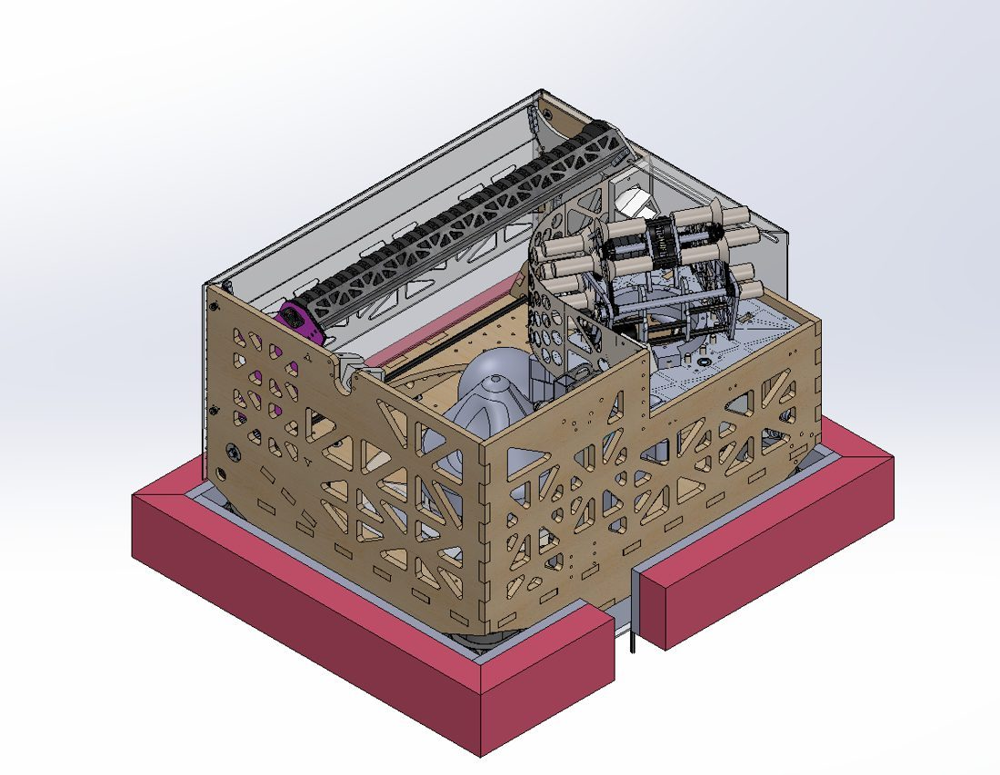
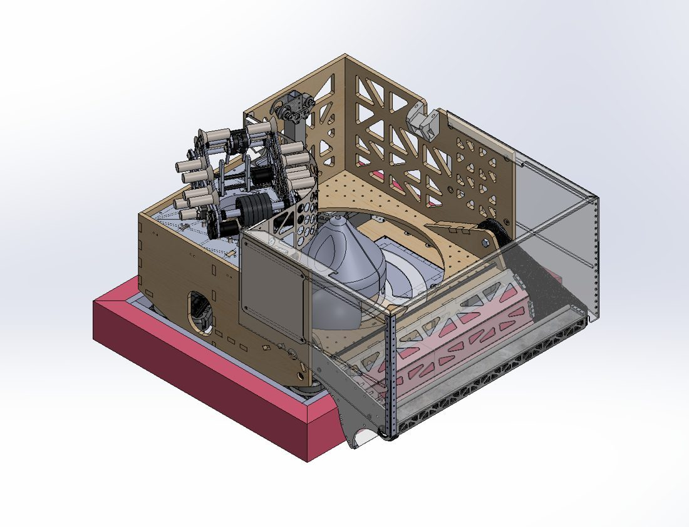
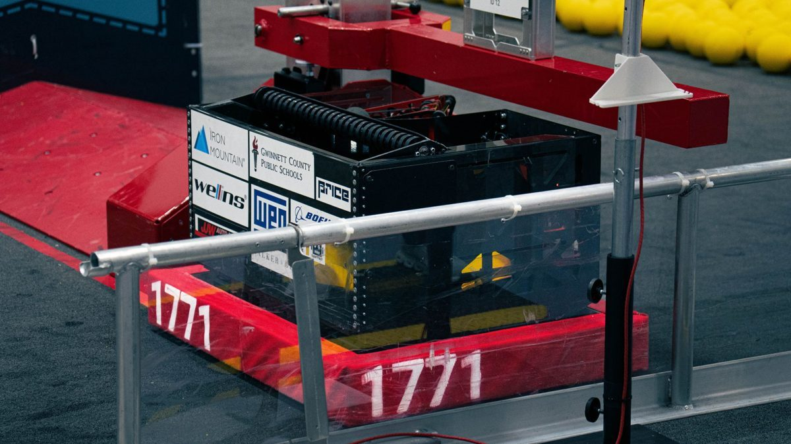
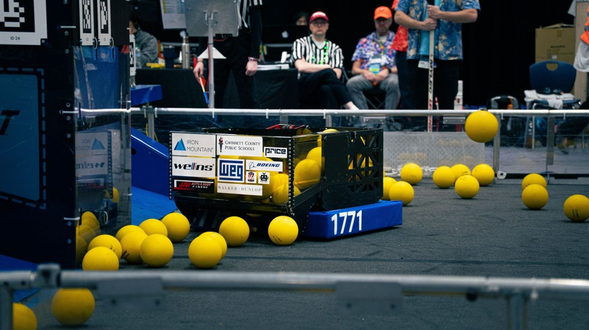
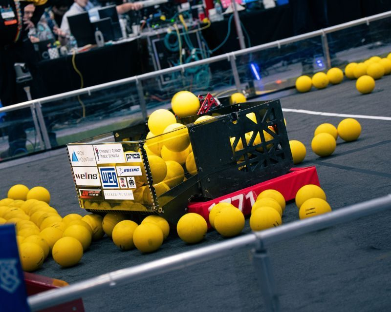
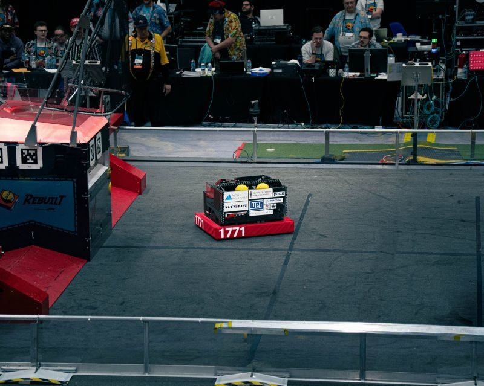

Blitz
FRC competition robot — Team 1771 · 2026 season
- Role
- Lead designer and lead engineer
- Team
- FIRST Robotics Competition Team 1771
- Dates
- Jan 2026 – May 2026
- Owned
- Complete electrical architecture; CAD of all mechanical subsystems and their integration; assembly of the electrical systems and physical structure
- Result
- Milstein Division semifinalists and alliance captain, FRC World Championship 2026
Blitz is the first robot whose entire architecture was mine — the electrical board it runs on, the mechanisms bolted above it, and the decisions connecting the two. I also independently CAD’d a second robot that season, mechanical and electrical, which the team nicknamed Onslaught.
-
420°Turret rotation range
-
2 boltsTo remove and reinstall the entire intake
Requirements and constraints
The 2026 game was physically punishing. Robots took sustained contact, and mechanisms that hung outside the frame perimeter got hit. Three constraints followed from that, and they drove nearly every decision below:
- Survive contact without losing scoring speed. Protection that slowed us down was not worth it.
- Be serviceable between matches. On a competition schedule you may have fifteen minutes between matches. A repair that needs an hour is a repair you do not make.
- Be manufacturable in-house. We had a CNC router, a mill, and 3D printers. Anything I designed had to come off one of those, because a part we had to order was a part we could not iterate on.
Electrical architecture
I laid out the entire electrical system in CAD before anything was wired, and that is the part of this project I would most want a hardware reviewer to look at. The board is not a place to put components that were left over — it is where serviceability, wire length, and failure isolation are decided.

Power distribution and the main breaker sit together at the centre of the board, and the four drive assemblies sit at the corners. Putting distribution in the middle rather than at one end means the high-current runs fan outward from a single point instead of traversing the length of the frame, and it keeps the heavy-gauge wiring off the paths the mechanisms sweep through.
The control electronics are grouped together on one side rather than distributed between the motor controllers. The low-current signal side of the robot stays together and away from the motor leads, and at competition the things you actually need to reach when diagnosing a problem are reachable from one side of the frame.
CAN bus routing
The CAN bus is a daisy chain, so its physical routing is its topology — there is no arrangement of the wire that the network does not notice. I routed the chain by physical adjacency, so that each device connects to the ones nearest it on the board rather than to the ones nearest it in the numbering.
The reason is serviceability under time pressure. When the order is physical, a controller can be pulled and replaced without disturbing the wiring for anything else, because its two neighbours in the chain are the two devices sitting next to it. It also keeps the run compact and avoids stub branches off the main chain, which on a differential bus are reflections waiting to happen.
Protecting the board
The electronics board sits on the floor of the robot under a metal cover, positioned so the cover is shielded behind the bumpers. This is the same reasoning as the quick-swap intake: the game hits things, so the things it can reach should either be replaceable in minutes or not be reachable. The board is the one system on the robot you cannot swap in a match turnaround, so it goes where contact does not get to it.
Mechanical subsystem design
I CAD’d every mechanical subsystem and their integration into the frame. The through-line is that a mechanism which does two jobs off one motor is a mechanism with fewer things to fail.

Chassis
The chassis is 12 mm Baltic birch, cut on our CNC router. Plywood is an unusual choice next to the aluminium extrusion most teams use, and we made it for iteration speed: we could cut a new plate the same day, and we could drill a mounting hole anywhere we needed one without hunting for a slot. The whole chassis is lightening-holed to pull weight back out without giving up rigidity.
Intake and hopper
The intake pivots on two motors. One drives the up-and-down motion; the other spins a row of 60-durometer composite wheels inward to pull game pieces in. That same pivot motion also drives the hopper, sliding it in and out passively as the intake moves — a mechanical linkage instead of a third motor, one fewer controller on the bus and one fewer thing to fail.
The hopper is polycarbonate, cut and bent on the CNC, shaped to expand the effective storage volume inside the frame. I PID-tuned the intake so a full load of game pieces cannot push it back up under its own weight, because if the intake creeps upward the passive hopper motion goes with it.
Both intake motors live inside the main chassis rather than out on the intake arm. That is what makes the two-bolt swap possible: the arm carries no wiring, so pulling it is mechanical only. Given how much contact the intake absorbed that season, a two-bolt replacement was worth designing around.

Indexing — the spindexer
Indexing is where most ball-handling robots jam, so it got the most iteration. A 3D-printed cone with holes and divots stirs the game pieces to break up bridging, and a moving polycarbonate floor attached to that cone carries them forward without ever compressing them — compression is what turns a slow feed into a hard jam. Both surfaces are wrapped in grip tape for consistent traction.
Around the moving floor is a 3D-printed sloped ring we called the Singularity, which uses gravity to feed pieces into the floor faster. That ring went through dozens of iterations; it is the part of the robot I reprinted most. The whole assembly runs off a custom two-motor 3D-printed gearbox at the bottom of the robot.
Feeder
A single-motor feeder lifts pieces from the indexer into the turret. Pulleys and gears set different ratios on the front and back rollers so both run correctly off that one motor. Two omni wheels at the front pull pieces in with minimal friction, then a small 3D-printed ramp, then polycord the rest of the way up.
Turret and shooter
The turret rotates 420 degrees — a full rotation plus a third of another — driven by two constant-force springs pulling a tether around a 3D-printed ring. The assembly is 12.75 inches in diameter and carries three motors and their controllers directly on the turret: two for the main shooter wheels and four back-hood wheels, one for rotation. We spent significant test time on back-hood gear ratios specifically, balancing range against accuracy and current draw.
Putting the controllers on the turret rather than on the board was the trade I thought hardest about. It costs a rotating service loop in the CAN chain and the power leads, which is a real failure mode. It buys short motor leads on the three highest-duty motors on the robot, and it means the turret comes off as one assembly.
What we designed and did not install
We fully CAD’d a climber and then left it off the robot. Given our match strategy, the climb was not worth the weight, the complexity, or the failure risk it added. It was a deliberate call rather than a mechanism that ran out of build season.
Manufacturing and assembly
We manufactured most of the robot in-house: the chassis and hopper on the CNC router, structural parts on the mill, and a long list of custom parts on the printers — the spindexer cone, the Singularity ring, the two-motor gearbox, the feeder ramp. I assembled the electrical systems and the physical structure, which is the part of this project that most changed how I design.
Wiring a board you drew yourself is an immediate feedback loop. Clearances that looked adequate in CAD turn out not to allow for the bend radius of 6 AWG; a connector that is reachable in the model is not reachable once the mechanism above it exists. Most of what I now do differently at the layout stage, I learned with a crimper in my hand.

Competition validation
Blitz reached the Milstein Division semifinals at the 2026 FRC World Championship, as an alliance captain. A placement is weak evidence for any individual design decision, so the honest version is narrower: the robot played a full championship schedule in a high-contact game, and the parts that absorbed that contact were the parts I had designed to come off quickly.



What I would change
I would put the CAN chain on labelled, keyed connectors at the points where it crosses onto a moving assembly. Right now the turret’s service loop is a continuous run, which means diagnosing a bus fault on the turret involves tracing wire rather than unplugging one connector and asking whether the fault moved. That is a fifteen-minute problem in a fifteen-minute turnaround.
I would also give the electrical board a service position. It is protected, which was the goal, but protected and accessible were treated as opposites when a hinged or sliding cover would have given us both.
On the mechanical side, the Singularity ring took dozens of iterations because I was tuning it by printing it. I should have built a simple test fixture that let me feed pieces through candidate profiles without mounting them on the robot — the iteration count was not the problem, the cost per iteration was.